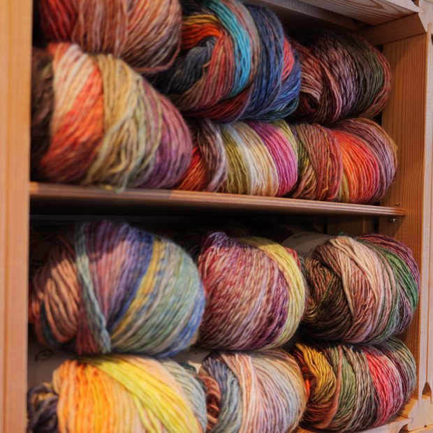
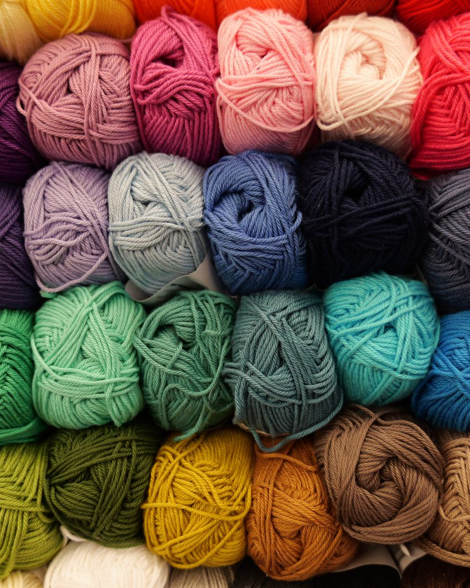
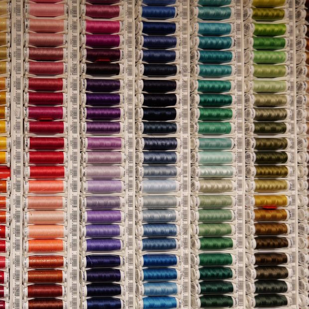
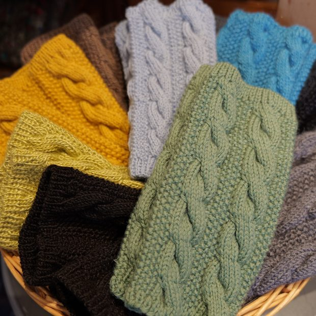
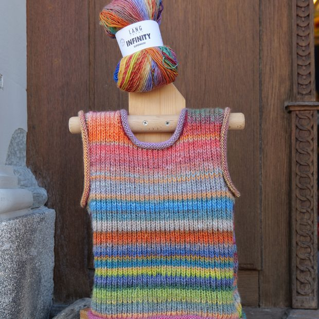
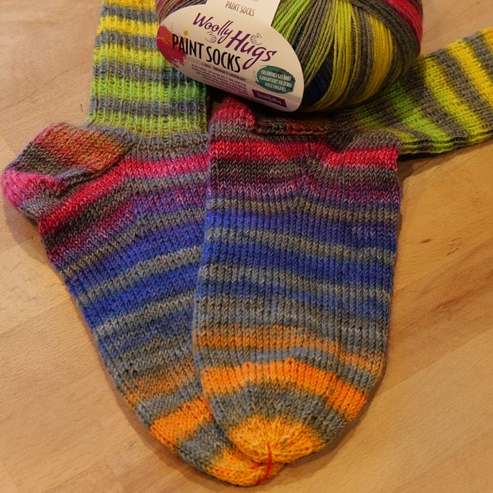
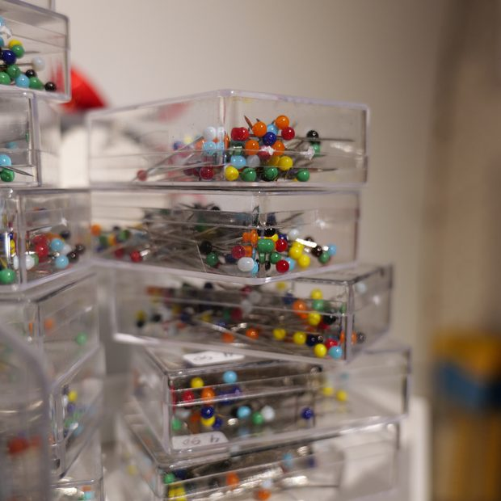

Sommerzeiten
Gilt jetztVon Ostern bis zur Olma
- Di, Fr9.00–11.30 und 14.00–18.00 Uhr
- Mi, Sa9.00–11.30 Uhr
- Dogeschlossen
Bei uns finden Sie das passende Garn und wissen danach, was Sie damit machen. Wir rechnen Ihnen den Materialbedarf aus, bevor Sie kaufen.
Fantasia, Hauptstrasse 11, Speicher
Gratis Parkplätze hinter dem Haus

Die Zeiten wechseln zweimal im Jahr: Sommerzeiten von Ostern bis zur Olma, Winterzeiten von der Olma bis Ostern.
Von Ostern bis zur Olma
Von der Olma bis Ostern
Was im Laden liegt, können Sie anfassen, vergleichen und in der Hand abwägen.

Alpaka, Merino, Baumwolle und Farbverlaufsgarne. Zu jedem Garn Lauflänge, Nadelstärke und Pflegehinweis.

Nähfaden in über hundert Farben, dazu Nadeln, Knöpfe, Reissverschlüsse und Bänder — auch einzeln.

Fertig gestrickte Stirnbänder, Socken und Kleinigkeiten aus dem Laden, auf Wunsch verpackt.

Modellauswahl, Farbzusammenstellung, Verarbeitung. Wir rechnen aus, wie viele Knäuel Sie für Ihr Stück brauchen.
„Sagen Sie mir, was Sie stricken möchten — den Rest rechnen wir zusammen aus.“
Susan Züst führt Fantasia an der Hauptstrasse 11 in Speicher. Sie kennt die Garne im Regal, weiss, welches sich nach dreimal Waschen noch gleich anfühlt, und nimmt sich Zeit für die Frage vor dem Kauf.
Kommen Sie mit Ihrem Modell, einer Massangabe oder einem angefangenen Stück vorbei.

